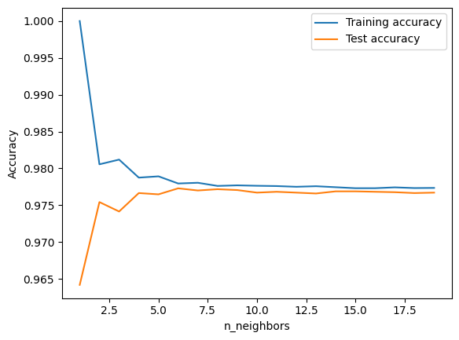
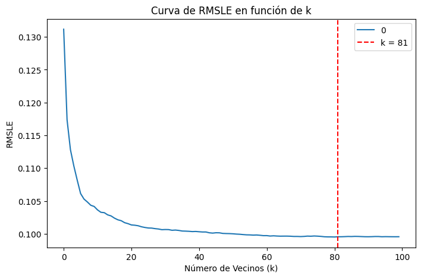

Cargue de Datos para el Modelo K-Nearest Neighbors - KNN#
KNN - (K-Nearest Neighbors)#
import numpy as np
import pandas as pd
import matplotlib.pyplot as plt
import seaborn as sns
import warnings
warnings.filterwarnings('ignore')
import plotly.express as px
import plotly.graph_objects as go
from sklearn.model_selection import train_test_split
from sklearn.linear_model import LinearRegression
from sklearn.metrics import mean_squared_error, r2_score
import os
for dirname, _, filenames in os.walk('/kaggle/input'):
for filename in filenames:
print(os.path.join(dirname, filename))
ruta = r'C:/Users/wmanj/OneDrive/Escritorio/MACHINELEARNING/tornados.csv'
df = pd.read_csv(ruta)
df.isnull().sum()
---------------------------------------------------------------------------
FileNotFoundError Traceback (most recent call last)
Cell In[1], line 20
17 print(os.path.join(dirname, filename))
19 ruta = r'C:/Users/wmanj/OneDrive/Escritorio/MACHINELEARNING/tornados.csv'
---> 20 df = pd.read_csv(ruta)
21 df.isnull().sum()
File ~\miniconda3\envs\ml_venv\lib\site-packages\pandas\io\parsers\readers.py:948, in read_csv(filepath_or_buffer, sep, delimiter, header, names, index_col, usecols, dtype, engine, converters, true_values, false_values, skipinitialspace, skiprows, skipfooter, nrows, na_values, keep_default_na, na_filter, verbose, skip_blank_lines, parse_dates, infer_datetime_format, keep_date_col, date_parser, date_format, dayfirst, cache_dates, iterator, chunksize, compression, thousands, decimal, lineterminator, quotechar, quoting, doublequote, escapechar, comment, encoding, encoding_errors, dialect, on_bad_lines, delim_whitespace, low_memory, memory_map, float_precision, storage_options, dtype_backend)
935 kwds_defaults = _refine_defaults_read(
936 dialect,
937 delimiter,
(...)
944 dtype_backend=dtype_backend,
945 )
946 kwds.update(kwds_defaults)
--> 948 return _read(filepath_or_buffer, kwds)
File ~\miniconda3\envs\ml_venv\lib\site-packages\pandas\io\parsers\readers.py:611, in _read(filepath_or_buffer, kwds)
608 _validate_names(kwds.get("names", None))
610 # Create the parser.
--> 611 parser = TextFileReader(filepath_or_buffer, **kwds)
613 if chunksize or iterator:
614 return parser
File ~\miniconda3\envs\ml_venv\lib\site-packages\pandas\io\parsers\readers.py:1448, in TextFileReader.__init__(self, f, engine, **kwds)
1445 self.options["has_index_names"] = kwds["has_index_names"]
1447 self.handles: IOHandles | None = None
-> 1448 self._engine = self._make_engine(f, self.engine)
File ~\miniconda3\envs\ml_venv\lib\site-packages\pandas\io\parsers\readers.py:1705, in TextFileReader._make_engine(self, f, engine)
1703 if "b" not in mode:
1704 mode += "b"
-> 1705 self.handles = get_handle(
1706 f,
1707 mode,
1708 encoding=self.options.get("encoding", None),
1709 compression=self.options.get("compression", None),
1710 memory_map=self.options.get("memory_map", False),
1711 is_text=is_text,
1712 errors=self.options.get("encoding_errors", "strict"),
1713 storage_options=self.options.get("storage_options", None),
1714 )
1715 assert self.handles is not None
1716 f = self.handles.handle
File ~\miniconda3\envs\ml_venv\lib\site-packages\pandas\io\common.py:863, in get_handle(path_or_buf, mode, encoding, compression, memory_map, is_text, errors, storage_options)
858 elif isinstance(handle, str):
859 # Check whether the filename is to be opened in binary mode.
860 # Binary mode does not support 'encoding' and 'newline'.
861 if ioargs.encoding and "b" not in ioargs.mode:
862 # Encoding
--> 863 handle = open(
864 handle,
865 ioargs.mode,
866 encoding=ioargs.encoding,
867 errors=errors,
868 newline="",
869 )
870 else:
871 # Binary mode
872 handle = open(handle, ioargs.mode)
FileNotFoundError: [Errno 2] No such file or directory: 'C:/Users/wmanj/OneDrive/Escritorio/MACHINELEARNING/tornados.csv'
df['loss'] = df['loss'].replace(0, pd.NA)
df['loss'] = df['loss'].interpolate(method='linear')
# Imputar los valores NaN con la media de la columna 'mag'
df['mag'] = df['mag'].fillna(df['mag'].mean())
df.isnull().sum()
om 0
yr 0
mo 0
dy 0
date 0
time 0
tz 0
datetime_utc 0
st 0
stf 0
mag 0
inj 0
fat 0
loss 0
slat 0
slon 0
elat 0
elon 0
len 0
wid 0
ns 0
sn 0
f1 0
f2 0
f3 0
f4 0
fc 0
dtype: int64
pip install mglearn
pip install -r requirements.txt
Note: you may need to restart the kernel to use updated packages.
[notice] A new release of pip is available: 24.3.1 -> 25.0.1
[notice] To update, run: python.exe -m pip install --upgrade pip
ERROR: Could not open requirements file: [Errno 2] No such file or directory: 'requirements.txt'
# Crear la columna 'mortality' en el DataFrame original
df['mortality'] = df['fat'].apply(lambda x: 0 if x == 0 else 1)
# Renombrar el DataFrame a 'mortality_target'
mortality_target = df
import numpy as np
# Crear la columna 'mortality' con 0 si 'fat' es 0, y 1 si 'fat' es mayor que 0
df['mortality'] = np.where(df['fat'] == 0, 0, 1)
# Contar la cantidad de ceros y unos
print("Cantidad de ceros:", (df['mortality'] == 0).sum())
print("Cantidad de unos:", (df['mortality'] == 1).sum())
# Asignar el DataFrame modificado a 'tornados.target'
tornados_target = df
Cantidad de ceros: 67120
Cantidad de unos: 1573
from sklearn.model_selection import train_test_split
X = tornados_target[['om', 'yr', 'mo', 'dy', 'stf', 'mag', 'inj', 'fat', 'loss', 'slat', 'slon', 'elat', 'elon', 'len', 'wid', 'ns', 'sn', 'f1', 'f2', 'f3', 'f4']]
y = df['mortality']
# Importar las bibliotecas necesarias
import pandas as pd
from sklearn.model_selection import train_test_split
from sklearn.neighbors import KNeighborsClassifier
import matplotlib.pyplot as plt
# Seleccionar las características y la variable objetivo
X = tornados_target[['mag', 'slat', 'slon', 'elat', 'elon', 'len', 'wid','fat','f1', 'f2', 'f3', 'f4']]
y = df['mortality']
# Dividir los datos en conjunto de entrenamiento y prueba
X_train, X_test, y_train, y_test = train_test_split(X, y, stratify=y, random_state=66)
# Listas para almacenar la exactitud en entrenamiento y prueba
training_accuracy = []
test_accuracy = []
# Configuración de los vecinos
neighbors_settings = range(1, 20)
# Bucle para ajustar el modelo con diferentes números de vecinos
for n_neighbors in neighbors_settings:
clf = KNeighborsClassifier(n_neighbors=n_neighbors)
clf.fit(X_train, y_train)
training_accuracy.append(clf.score(X_train, y_train))
test_accuracy.append(clf.score(X_test, y_test))
# Graficar los resultados
plt.plot(neighbors_settings, training_accuracy, label="Training accuracy")
plt.plot(neighbors_settings, test_accuracy, label="Test accuracy")
plt.ylabel("Accuracy")
plt.xlabel("n_neighbors")
plt.legend();

Si la precisión en prueba es alta y se acerca a la precisión en entrenamiento, es una buena señal de que el modelo es bien ajustado (no está ni sobreajustado ni subajustado).
Si la precisión en prueba es baja, eso indica que el modelo no generaliza bien y necesita ajustes (puede que sea necesario modificar la cantidad de vecinos).
clf = KNeighborsClassifier(n_neighbors=12)
clf.fit(X_train, y_train)
KNeighborsClassifier(n_neighbors=12)In a Jupyter environment, please rerun this cell to show the HTML representation or trust the notebook.
On GitHub, the HTML representation is unable to render, please try loading this page with nbviewer.org.
KNeighborsClassifier(n_neighbors=12)
print(clf.score(X_train, y_train), clf.score(X_test, y_test))
0.9775034453308488 0.9767089786887155
from sklearn.model_selection import cross_val_score
from sklearn.neighbors import KNeighborsClassifier
from sklearn.model_selection import train_test_split
from sklearn.datasets import load_breast_cancer
import numpy as np
# Dividir los datos en conjunto de entrenamiento y prueba
X_train, X_test, y_train, y_test = train_test_split(X, y, stratify=y, random_state=66)
best_score = 0
for n_neighbors in range(1, 20):
knn = KNeighborsClassifier(n_neighbors=n_neighbors)
scores = cross_val_score(knn, X_train, y_train, cv=5)
score = np.mean(scores)
if score > best_score:
best_score = score
best_parameters = {'n_neighbors': n_neighbors}
print("Best cross-validation accuracy: {:.2f}".format(best_score))
print("Best parameters: ", best_parameters)
Best cross-validation accuracy: 0.98
Best parameters: {'n_neighbors': 19}
knn = KNeighborsClassifier(**best_parameters)
knn.fit(X_train, y_train)
KNeighborsClassifier(n_neighbors=19)In a Jupyter environment, please rerun this cell to show the HTML representation or trust the notebook.
On GitHub, the HTML representation is unable to render, please try loading this page with nbviewer.org.
KNeighborsClassifier(n_neighbors=19)
print("Train set accuracy:", knn.score(X_train, y_train), "; Test set accuracy:", knn.score(X_test, y_test))
Train set accuracy: 0.9773481628137192 ; Test set accuracy: 0.9767089786887155
pip install mglearn
import mglearn
pip install neighbors
from sklearn.neighbors import KNeighborsRegressor
from sklearn.neighbors import KNeighborsRegressor
from sklearn.metrics import mean_squared_log_error
import numpy as np
rmsle_val = []
best_rmsle = 1.0
for k in range(100):
k = k + 1
knn = KNeighborsRegressor(n_neighbors=k)
knn.fit(X_train, y_train)
y_pred = knn.predict(X_test)
rmsle = np.sqrt(mean_squared_log_error(y_test, y_pred))
if rmsle < best_rmsle:
best_rmsle = rmsle
best_k = k
rmsle_val.append(rmsle)
print('RMSLE value for k= ', k, 'is:', rmsle)
print(f"Best RMSLE: {best_rmsle}, Best k: {best_k}")
RMSLE value for k= 1 is: 0.13116781667521776
RMSLE value for k= 2 is: 0.1173680111273083
RMSLE value for k= 3 is: 0.1128072041698597
RMSLE value for k= 4 is: 0.11033405734869016
RMSLE value for k= 5 is: 0.10817870401413761
RMSLE value for k= 6 is: 0.1061301129022195
RMSLE value for k= 7 is: 0.10529381628716074
RMSLE value for k= 8 is: 0.10484730616326025
RMSLE value for k= 9 is: 0.10435083343092043
RMSLE value for k= 10 is: 0.1041645760126683
RMSLE value for k= 11 is: 0.1036397873763109
RMSLE value for k= 12 is: 0.10327599368206312
RMSLE value for k= 13 is: 0.10321771708418433
RMSLE value for k= 14 is: 0.10288447451144551
RMSLE value for k= 15 is: 0.10272400699808597
RMSLE value for k= 16 is: 0.10238675447374329
RMSLE value for k= 17 is: 0.10213533855409873
RMSLE value for k= 18 is: 0.1019942381694187
RMSLE value for k= 19 is: 0.10169581192814242
RMSLE value for k= 20 is: 0.10154800681617192
RMSLE value for k= 21 is: 0.10135038037545936
RMSLE value for k= 22 is: 0.1013070736201286
RMSLE value for k= 23 is: 0.10122656538430809
RMSLE value for k= 24 is: 0.10106790212977726
RMSLE value for k= 25 is: 0.10096360552531991
RMSLE value for k= 26 is: 0.10088434386274236
RMSLE value for k= 27 is: 0.10086795421888455
RMSLE value for k= 28 is: 0.10078623203836488
RMSLE value for k= 29 is: 0.10073146516717241
RMSLE value for k= 30 is: 0.10062869630275392
RMSLE value for k= 31 is: 0.10065111386530523
RMSLE value for k= 32 is: 0.1006401941989809
RMSLE value for k= 33 is: 0.10053662731997162
RMSLE value for k= 34 is: 0.10056890522478286
RMSLE value for k= 35 is: 0.10051414628772293
RMSLE value for k= 36 is: 0.10042253326732019
RMSLE value for k= 37 is: 0.10040563147559645
RMSLE value for k= 38 is: 0.10038052195918905
RMSLE value for k= 39 is: 0.10033838466236462
RMSLE value for k= 40 is: 0.10035727386799041
RMSLE value for k= 41 is: 0.10031426100588021
RMSLE value for k= 42 is: 0.10027640251939102
RMSLE value for k= 43 is: 0.1002776920095706
RMSLE value for k= 44 is: 0.10015476572219718
RMSLE value for k= 45 is: 0.10010572628936694
RMSLE value for k= 46 is: 0.10016067815829043
RMSLE value for k= 47 is: 0.10014932601116969
RMSLE value for k= 48 is: 0.10005872757659139
RMSLE value for k= 49 is: 0.10003921447604382
RMSLE value for k= 50 is: 0.10002772609429568
RMSLE value for k= 51 is: 0.10000010949420296
RMSLE value for k= 52 is: 0.09995677315497026
RMSLE value for k= 53 is: 0.09993056897281391
RMSLE value for k= 54 is: 0.09988116183440349
RMSLE value for k= 55 is: 0.09984239294267855
RMSLE value for k= 56 is: 0.09983157654888884
RMSLE value for k= 57 is: 0.09979995066258589
RMSLE value for k= 58 is: 0.0998184159606981
RMSLE value for k= 59 is: 0.09977470065756416
RMSLE value for k= 60 is: 0.0997178718445897
RMSLE value for k= 61 is: 0.09972183726886015
RMSLE value for k= 62 is: 0.09966060597388768
RMSLE value for k= 63 is: 0.09969317388209109
RMSLE value for k= 64 is: 0.09965977174970225
RMSLE value for k= 65 is: 0.09963941576033912
RMSLE value for k= 66 is: 0.09964596394629922
RMSLE value for k= 67 is: 0.09964728027980055
RMSLE value for k= 68 is: 0.09963101782713248
RMSLE value for k= 69 is: 0.09959725578019281
RMSLE value for k= 70 is: 0.09959905485910678
RMSLE value for k= 71 is: 0.09957826025192289
RMSLE value for k= 72 is: 0.0996023473671237
RMSLE value for k= 73 is: 0.0996489341623834
RMSLE value for k= 74 is: 0.09963107004013085
RMSLE value for k= 75 is: 0.09966606249838442
RMSLE value for k= 76 is: 0.09964181960404939
RMSLE value for k= 77 is: 0.09960521181388018
RMSLE value for k= 78 is: 0.09954866492544327
RMSLE value for k= 79 is: 0.09952927303920751
RMSLE value for k= 80 is: 0.099528150185785
RMSLE value for k= 81 is: 0.09951451645787435
RMSLE value for k= 82 is: 0.09954818806619709
RMSLE value for k= 83 is: 0.09955036238058963
RMSLE value for k= 84 is: 0.0995683814735184
RMSLE value for k= 85 is: 0.0995932619158226
RMSLE value for k= 86 is: 0.09958241334161602
RMSLE value for k= 87 is: 0.09960741376197862
RMSLE value for k= 88 is: 0.09959823140283433
RMSLE value for k= 89 is: 0.09957646579425883
RMSLE value for k= 90 is: 0.099556329211093
RMSLE value for k= 91 is: 0.09955126711994931
RMSLE value for k= 92 is: 0.0995635059242388
RMSLE value for k= 93 is: 0.0995877270727332
RMSLE value for k= 94 is: 0.09958568911280921
RMSLE value for k= 95 is: 0.09955134143523289
RMSLE value for k= 96 is: 0.09956661107652369
RMSLE value for k= 97 is: 0.09955886164162037
RMSLE value for k= 98 is: 0.09955290488640751
RMSLE value for k= 99 is: 0.099550405988989
RMSLE value for k= 100 is: 0.09955561801918783
Best RMSLE: 0.09951451645787435, Best k: 81
import pandas as pd
import matplotlib.pyplot as plt
curve = pd.DataFrame(rmsle_val)
curve.plot(figsize=(8,5))
# Etiquetas para los ejes
plt.xlabel('Número de Vecinos (k)')
plt.ylabel('RMSLE')
# Título opcional para mejorar la comprensión
plt.title('Curva de RMSLE en función de k')
# Resaltar k=81
plt.axvline(x=81, color='r', linestyle='--', label='k = 81')
# Añadir una leyenda para identificar la línea
plt.legend()
plt.show()

from sklearn.neighbors import KNeighborsRegressor # Importa desde sklearn.neighbors
# Ahora puedes crear el modelo sin el error
knn = KNeighborsRegressor(n_neighbors=81)
knn.fit(X_train, y_train)
y_pred = knn.predict(X_test)
score = knn.score(X_test, y_test)
print(f"Score del modelo: {score}")
Score del modelo: 0.08274669092769293
from sklearn.preprocessing import StandardScaler
from sklearn.model_selection import train_test_split
from sklearn.neighbors import KNeighborsRegressor
# Normalización de los datos
scaler = StandardScaler()
X_train_scaled = scaler.fit_transform(X_train)
X_test_scaled = scaler.transform(X_test)
# Entrenar el modelo con los datos escalados
knn = KNeighborsRegressor(n_neighbors=31)
knn.fit(X_train_scaled, y_train)
y_pred = knn.predict(X_test_scaled)
score = knn.score(X_test_scaled, y_test)
print(f"Score del modelo después de escalar: {score}")
Score del modelo después de escalar: 0.5293018384402577
from sklearn.metrics import r2_score, mean_absolute_error, explained_variance_score, mean_squared_error, mean_squared_log_error
# Cálculos de las métricas
r2_valid = r2_score(y_test, y_pred)
mae_valid = mean_absolute_error(y_test, y_pred)
evs_valid = explained_variance_score(y_test, y_pred, multioutput='uniform_average')
rmse_valid = np.sqrt(mean_squared_error(y_test, y_pred))
rmsle_valid = np.sqrt(mean_squared_log_error(y_test, y_pred))
# Mostrar los resultados
print('R2 Valid:', r2_valid)
print('EVS Valid:', evs_valid)
print('MAE Valid:', mae_valid)
print('RMSE Valid:', rmse_valid)
print('RMSLE Valid:', rmsle_valid)
R2 Valid: 0.5293018384402577
EVS Valid: 0.532243762788029
MAE Valid: 0.016998688940897153
RMSE Valid: 0.10258998973228019
RMSLE Valid: 0.06850015437688937
# Usaremos la columna 'st' del DataFrame original para identificar cada muestra en el test.
countries_test = df.loc[X_test.index, 'st']
# Organizar los valores reales y las predicciones en un DataFrame
data_prediction = list(zip(y_test, y_pred))
data_prediction = pd.DataFrame(data_prediction, columns=['Test', 'Prediction'])
# Establecer como índice los identificadores de cada muestra (en este caso, el valor de 'st')
data_prediction = data_prediction.set_index(countries_test)
data_prediction = list(zip(y_test,y_pred))
data_prediction = pd.DataFrame(data_prediction, columns=['Test','Prediction'])
data_prediction = data_prediction.set_index(countries_test)
data_prediction.head(20)
| Test | Prediction | |
|---|---|---|
| st | ||
| KS | 0 | 0.000000 |
| OK | 0 | 0.161290 |
| KY | 0 | 0.000000 |
| ND | 0 | 0.000000 |
| NE | 0 | 0.000000 |
| IL | 0 | 0.000000 |
| SC | 0 | 0.000000 |
| MS | 0 | 0.000000 |
| KY | 0 | 0.000000 |
| IN | 0 | 0.000000 |
| AL | 0 | 0.000000 |
| AR | 0 | 0.000000 |
| NC | 0 | 0.000000 |
| TX | 0 | 0.000000 |
| GA | 0 | 0.000000 |
| MO | 0 | 0.000000 |
| IN | 0 | 0.000000 |
| TX | 0 | 0.000000 |
| OK | 0 | 0.000000 |
| MS | 0 | 0.032258 |
import plotly.graph_objects as go
import numpy as np
# Preparar datos
data_3d = data_prediction.copy()
data_3d['st'] = data_3d.index.astype(str)
data_3d['Error'] = np.abs(data_3d['Test'] - data_3d['Prediction'])
# Crear el gráfico 3D
fig = go.Figure(data=[go.Scatter3d(
x=data_3d['st'], # Muestras
y=data_3d['Test'], # Valor real
z=data_3d['Prediction'], # Valor predicho
mode='markers',
marker=dict(
size=8,
color=data_3d['Error'], # Color por error
colorscale='Viridis',
colorbar=dict(title='Error absoluto'),
opacity=0.8
),
text=[f"ST: {st}<br>Real: {real:.2f}<br>Pred: {pred:.2f}<br>Error: {err:.2f}"
for st, real, pred, err in zip(data_3d['st'], data_3d['Test'], data_3d['Prediction'], data_3d['Error'])],
hoverinfo='text'
)])
# Ajustes de la escena
fig.update_layout(
title='Comparación 3D con Error absoluto por color',
scene=dict(
xaxis_title='STATE',
yaxis_title='Test',
zaxis_title='Predicción'
),
height=600
)
fig.show()